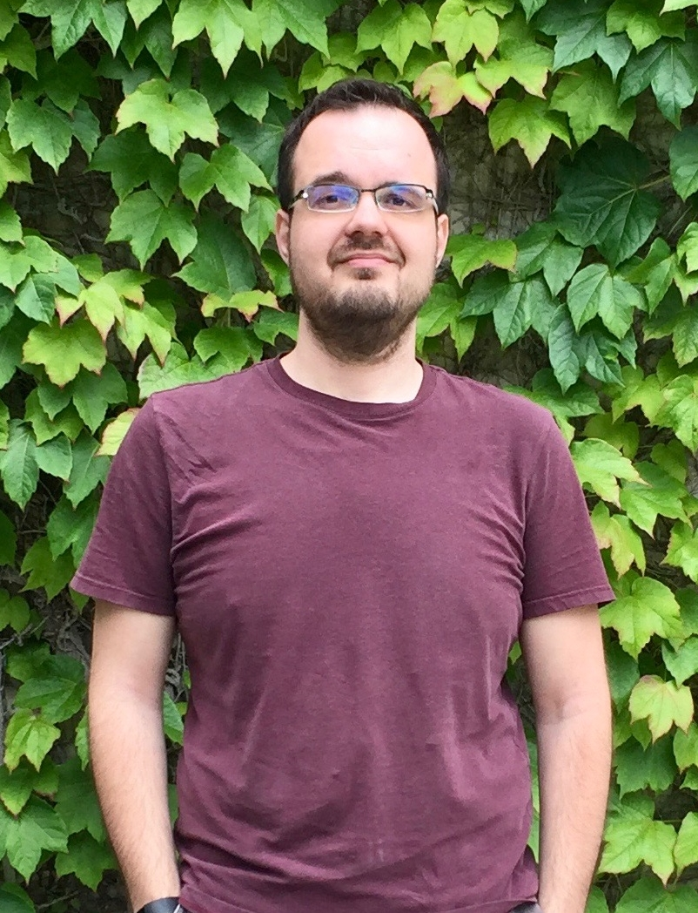
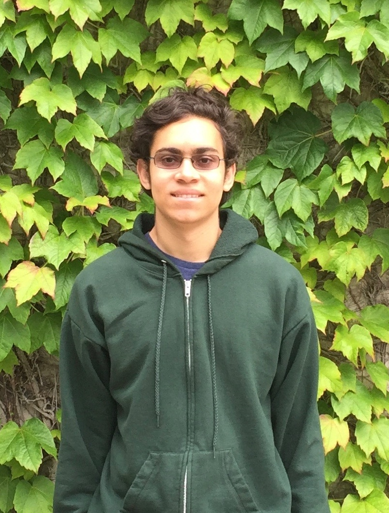

2016-2017

D. Zack Garza
President
Mathematics, Minor in Computer Science
4th Year, Muir College
Zack is a 4th year Pure Mathematics Major with a Computer Science Minor from Muir College. He joined SUMS primarily because wanted to help build mathematics community here at UCSD. He hopes SUMS continues to be a place where people can meet to share their knowledge and love of mathematics and foster a community of learning. Zack’s favorite math fact is that the sum of all n of the nth roots of unity is exactly zero. He feels that this fact gives rise to so many cool connections between algebra and geometry, and contains many nice symmetries—and one can recover Euler’s infamous identity as a special case! Zack has approximate knowledge of many musical instruments—drums, guitar, and a bit of piano. He also cycles often and enjoys restoring/rebuilding old arcade machines.

Aiden J. Yoon
Vice President
Probability and Statistics
3rd Year, Sixth College
Aiden is a 3rd year Mathematics–Probability and Statistics Major from Sixth College. As a transfer student, he saw the lack of a mathematics community at UCSD. Aiden joined SUMS after seeing a chance to create and join one. Aiden’s favorite field of mathematics is probability, as it forces us to abandon our intuitions and to instead focus on mathematical reasoning. Aiden’s enjoys snowboarding, listening to music, and playing video games.

Simon Hu
Secretary and Logistics
Electrical Engineering, Minor in Mathematics
2nd Year, Warren College
Simon is a 2nd year Electrical Engineering Major with a Mathematics Minor from Warren College. He decided to get involved with SUMS because he felt the undergraduate mathematics community at UCSD did not have an official organization prior to SUMS that provided them with the resources necessary to succeed. He has a deep passion for mathematics and wants to share that passion with other Math Majors at UCSD. Simon’s favorite field of mathematics is partial differential equations (PDEs), as they help model a lot of physical phenomena, which he thinks is amazing. In particular, PDEs have so many applications for physics in engineering (his major!). Simon enjoys reading, watching Netflix, and working on personal projects.

Peter Amidon
Technology Coordinator
Computer Science
1st Year, Muir College
Peter is a 1st year Computer Science Major from Muir College. He joined SUMS because he enjoys abstract math and computer science related math, and had been attending Zack’s lightning talks regularly. As Peter helped out more with the club’s lightning talks, he heard about the SUMS reboot meeting and decided to attend and become an officer. He hopes to gain lots of fun math learning/teaching experience out of SUMS, as well as to meet other math loving undergrads. Peter’s favorite field of math is category theory, as it seems to unify all the other fields of mathematics. He finds univalent foundations and homotopy type theory cool as well. In addition, Peter’s favorite mathematician is either David Hilbert, for introducing formalism into mathematics, or Alonzo Church, for introducing math into computer science. Peter’s interests include research relating to programing languages, reading, and occasional bicycling.

Keenan Chan
Publicity Chair
Mathematics–Computer Science
1st Year, Muir College
Keenan is a 1st year Mathematics–Computer Science Major from Muir College. Being a Math–CS Major here at UCSD, he was dismayed at the lack of a community of mathematics students. Being a part of SUMS has allowed him to cause a change to this, and to encourage a community more welcoming to math students. From what little he has covered so far, Keenan has found himself enjoying abstract algebra a lot. He cannot wait to take the MATH 100 sequence (Abstract Algebra) at UCSD. Keenan’s enjoys hiking, biking, and traveling around in general. In fact, he has been learning to drive recently, as it is his dream to go on a road trip in the U.S.